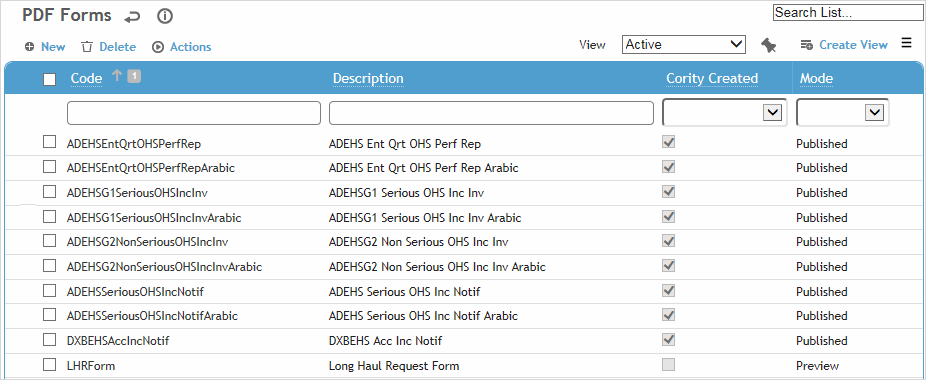
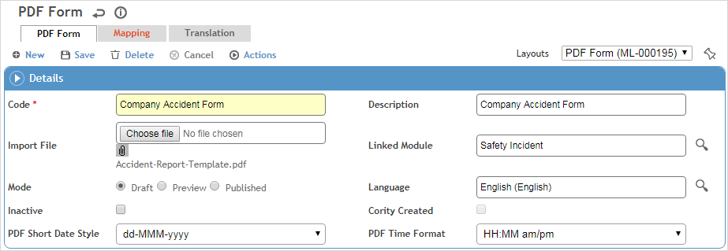
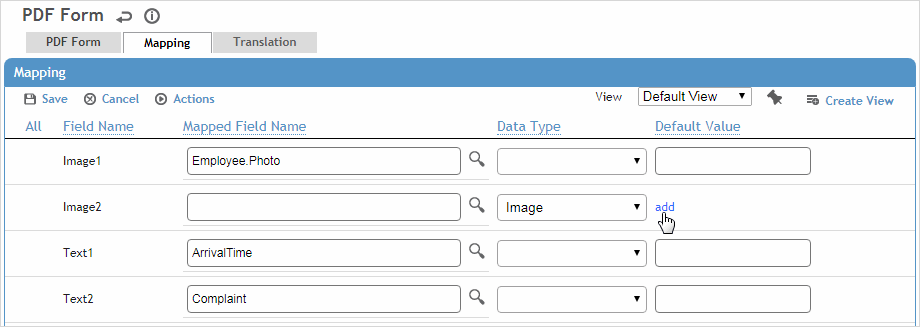

The PDFForm table includes all default Workers' Compensation (WC) forms. You can import PDF versions of additional forms, such as WC forms that are currently not supported, corporate process forms, or forms specific to a module such as an audit, clinic visit, waste management, etc.
Cority data can be mapped to fields on these user-created forms: these sources include fields in module records (including sublists), a questionnaire response, a subquery, or an image or image-type field. These fields will be populated automatically when the form is generated for an employee (user must click Save in the form to retain that data, or Delete to discard it).
You can configure a subquery used by a form to filter by one or more of a specific entity's fields; see Working with Ad Hoc Reports.
If a time field is mapped to a PDF, only the time will be shown; if a date field is mapped to a PDF, only the date will be shown. If you are mapping a sublist field that contains multiple records (e.g. multiple Nature of Injuries for an Injury Illness Case) to a field on the PDF (Field1 in this example), the records will be: - listed in one field (with a limit of 10), each separated by semi-colon, if only one Field1 exists. - listed in separate fields, if there are multiple Field1s using the same prefix (e.g. Field1[0], Field1[1], ... Field1[n]). - used to create and select checkboxes based on the record/value pairs in the sublist. That is, the records in the sublist are used to create the checkboxes and the corresponding values are used to select or deselect the checkboxes.
Alternatively, for fields that are not linked to a Cority field, you can assign a data type (number, text, date, yes/no) that allows a user to enter and save their own values, or you can enter a default value to always appear in a field.
In the PDFForm list view, the default WC forms are identified as Cority Created; these cannot be cloned, and you can only edit their Description.
User-created forms may be categorized as one of the followingModes:
Draft:
The Code, Description, and data on the Mapping tab can be edited.
The form will not display in its linked module.
Preview:
The Code, Description, and data on the Mapping tab can be edited.
The form cannot be saved.
Published:
The Code, Description, and data on the Mapping tab are read-only.
The form can be saved.
The form’s Mode cannot be changed to Draft or Preview.
Deprecated:
If a deprecated PDF form has a Deprecated Datevalue, it will only display on records that were created prior to that date. If Deprecated Dateis blank, the form will continue to display on any existing records where there was data saved, but will not display on new records in the linked created module or existing record where there was no data saved.
The form’s Mode cannot be changed to Draft or Preview.
For both Preview and Published modes, the form will display as follows:
If the linked module is Incident, it can be added to the First Report of Injury Forms tab on the Jurisdiction look-up table for the ALL (%) jurisdiction. It will display on every incident record’s Forms tab.
If the linked module is Injury/Illness, the form can be added to the First Report of Injury Forms tab on the Jurisdiction look-up table for any jurisdiction not equal to ALL (%). It will display on any Injury/Illness record with that particular jurisdiction.
For all other linked modules, the form will be available on each record’s Forms tab, if available on the layout.

Adding a PDF Form and Mapping its Fields
Ensure that the PDF has fields drawn on it (using an application such as Acrobat Pro or Nitro Pro). It must include at least one field as well as Save and Delete buttons labelled “save” and “delete” (lowercase) respectively. For example, you may add fields such as “Incident Date” and “Incident Time” to a form; when you import the PDF into the PDFForm table, you can then map fields in the Cority Incident database to the fields in the PDF.
Since PDF forms do not have a field type for images, if you want to map an image field, include a button field on the PDF for each image (other than save and delete). These will be translated as image type fields when imported to the PDFForm look-up table.
Click New.
Enter a Codeand Descriptionfor the form.
Click Browseto select the Import File PDF.
Select the Linked Module and Language.
When a custom form is selected on a record in the linked module, the mapped fields will display in the language specified here for the PDF form. If a mapped field does not have a translation, the default value for the field will be displayed. If no default value is available, the field will be empty (or null). (This applies to fields with table values, not to free-text fields.)
Select the Short Date Styleand Time Format used in the PDF.
PDF forms created prior to release 2018.2 default to dd-MMM-yyyy and must continue to use that format. If you want to use a different date format, clone the form, change the date format, and then save the clone.
If this form should not be displayed unless explicitly added to a record, select the Form not to show by defaultcheckbox. These forms will be available on the Forms tab of an incident record in the “Available, Not Selected Forms” view.
Click Save.

The Mapping tab lists all fields defined in the PDF, in the same order as they appear in the import file. Button fields (other than save and delete) are imported as mappable image fields with default name of Imagen (e.g. Image1, Image2, etc.).
To map text fields or subqueries:
To map a field to a Cority field, click to select the Mapped Field Name. The lookup will display all mappable fields from the linked module and its sublists, including questions from the linked module’s questionnaires (except Instruction or Drawn Response question types). It also displays all published subqueries that you have access to.
To allow a user to enter their own values, select the Data Type.
To have a field pre-populated, enter the Default Value.
To map image fields:
To map an image field to a specific image, select “Image” in the Data Typefield, then click the add link in the Default Valuecolumn to select the image.
To map an image field to an image-type field in Cority, select the Mapped Field Nameand choose from Signature or Photo fields or Draw-type questions.

New PDF forms are marked as Draftinitially. After you have uploaded the Import File, linked it to a module, and mapped the fields as required, clear the Draftcheckbox on the PDF Form tab to enable the form to be available in the Clinic Visit, Case Management and Incident module (as well as the Jurisdiction look-up table).
Once theDraftcheckbox is cleared, the PDF Form record becomes read-only and cannot be returned to Draft state. You can change the Descriptiononly; if you need to make other changes, choose Actions»Cloneto create a copy (you must provide a unique Codeand Description). You cannot clone Cority-created forms. You can delete a form only if the form is not being used in any jurisdictions, and no data is saved on the form.
Importing a Mapped PDF
When you import an updated (or new) PDF form that contains mapped fields into an existing PDFForm look-up table record, any existing fields along with their mappings will be retained on the Mapping tab. Any new fields will be added to the Mapping tab and any fields that do not exist in the updated/new PDF will be removed from the Mapping tab.
An administrator can migrate PDF forms from one environment to another; see Migrating Configurations.
 to select the Mapped Field Name. The lookup will display all mappable fields from the linked module and its sublists, including questions from the linked module’s questionnaires (except Instruction or Drawn Response question types). It also displays all published subqueries that you have access to.
to select the Mapped Field Name. The lookup will display all mappable fields from the linked module and its sublists, including questions from the linked module’s questionnaires (except Instruction or Drawn Response question types). It also displays all published subqueries that you have access to.